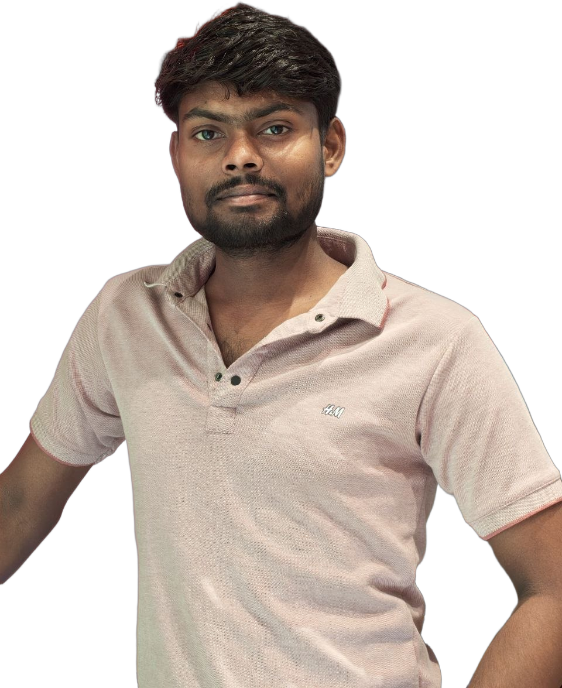
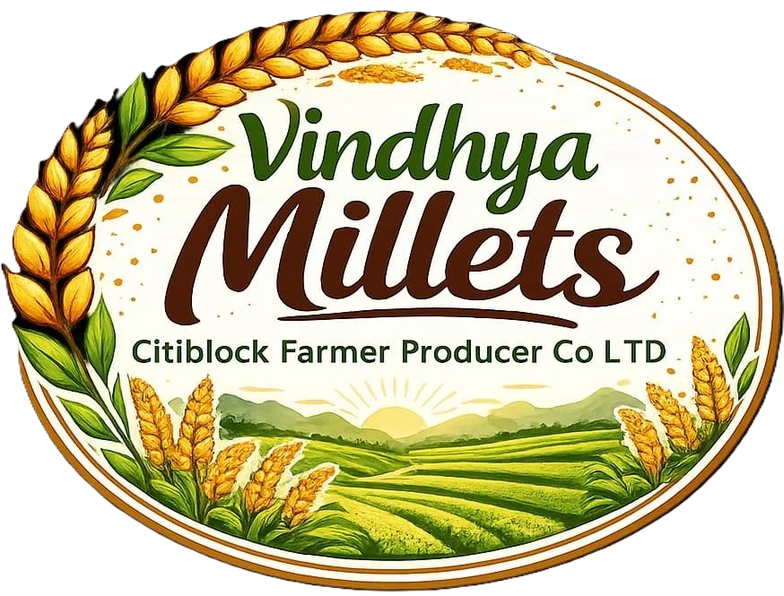
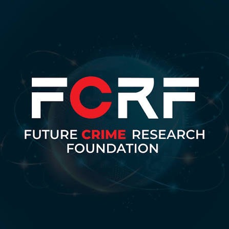
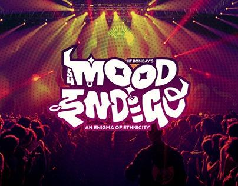

Build. Solve.
Create Impact.
Full Stack Developer & Open Source Contributor
Hi, I'm Gautam Kumar Maurya, B.Tech CSE (Data Science) Scholar at UIT Prayagraj (SGPA 8.8 · Rank 1 Topper). Digital Product & Tech Lead @ Vindhya Millets (3-Day DD Kisan National TV Documentary), Co-Founder & Tech Lead @ PathSync Learning, Co-Founder & CTO @ PrayagrajRooms (5,000+ launch clicks), WikiClub Tech Envoy @ UIT (1st Position Wiki Marathon '26), President @ UCC (Code Aarambh 9.0 for 600+ coders), Samsung Fellow @ ISWDP Cohort 9, Vice President @ GFG UIT (Awarded Most Active & Dedicated Person by HOD & DSW), Road to Wiki Fellow (3 Awards @ OKI-IIITH Gurugram Conclave), and UP Police Cyber Fellow.

From Ideas to Real-World Solutions
Practical, high-performance platforms engineered for active users, production scale, and verifiable community impact.
PrayagrajRooms
5K+ UsersSolved chaotic student room hunting across Prayagraj. Built verified listings, landlord dashboard, booking workflows, and geocoded search serving 5,000+ active university tenants.
VoxRAG
<200ms VoiceSub-200ms real-time voice RAG architecture with 48,995 indexed passages, FAISS FlatIP vector retrieval, multi-turn memory, FastEmbed embeddings, and strict hallucination guardrails.
Cyber Forensics Lab
UP Police AwardEngineered investigative tools for packet inspection, volatility memory dump triage, and threat intel under UP Police Cyber Cell. Honored with Best Content Creator Award by DSP Anjali Kataria.
Gautam AI Clone
Live AI AgentReal-time AI digital clone with speech synthesis and semantic search grounded over 40+ verified projects, fellowships, and papers. Click to converse directly with my digital self.
Extended Catalogue
All Production Builds & Research Platforms
VoxRAG
Production-grade, sub-200ms Voice-Enabled Conversational RAG system with multi-turn memory, multi-strategy chunking (48,995 passages), FAISS FlatIP vector search, and real-time grounding verification.
IntervAI
Intelligent real-time technical interview simulator delivering contextual questions, dynamic coding assessments, speech analysis, and actionable hiring diagnostics.
PrayagrajRooms
Verified digital room and accommodation discovery platform built over 10+ months to eliminate brokers for thousands of students and tenants in Prayagraj.
HH-GOA Frame Generator
Official Hacker House Goa 2026 Profile Picture Frame Generator. Fast client-side tool with HEIC support, custom frame overlays, 1080x1080 PNG export & direct X sharing (#FrameInGoa).
VeriTrust
AI-powered social media verification engine analyzing viral claims, detecting synthetic manipulation & bot amplification, and generating automated credibility scores.
NotesBazi (UGI Notes)
High-performance notes management and digital library platform specifically crafted for students of United Group of Institutions (UGI) supporting campuses like UIT.
NHAI Offline Biometrics
Offline biometric face recognition and anti-spoofing liveness detection system engineered for National Highway Authority of India (NHAI) operations.
IIT Bombay Techfest 3D
Interactive 3D web platform engineered for Techfest IIT Bombay featuring real-time WebGL rendering, 3D spatial scenes, interactive controls, and dynamic event portals.
Jarvis OS
Intelligent desktop operating system assistant executing voice automation, natural language system control, shell automation, and context-aware workspace workflows.
BusSetu
Real-time public transit tracking and route navigation platform optimizing daily highway commutes across Prayagraj with live schedule updates.
TripSync
Premium group travel and settlement tracker with greedy flow-minimizer debt reduction algorithm and peer-to-peer consensus approval.
PDFBAZI
Client-side document editor utility allowing users to merge, split, compress, and process PDF files completely offline in the browser without server uploads.
CampusClick
Centralized campus bulletin, event notification, and community portal engineered for student chapters and academic groups across UIT Prayagraj.
BuildX India Portal
Official registration and submission dashboard engineered for BuildX India 2026, handling live participant submissions and team registrations.
Open Source & Upstream Contributions
Serving as WikiClub Tech Envoy at UIT Prayagraj (Wikimedia Movement). Author of 26 upstream patches (13+ merged into production) across MediaWiki Core, TranslationNotifications, UploadWizard, MinervaNeue, GrowthExperiments, and Pywikibot.
WikiClub Tech Envoy
Appointed to lead the campus chapter at UIT Prayagraj, organize technical workshops, and mentor contributors across the global Wikimedia movement.
1st Place Sprint Winner
Secured 1st Place in the 1-Week Open Source Sprint organized by WikiClub Tech UIT for authoring and deploying production MediaWiki patches.
26+ Gerrit Patches (13+ Merged)
Active author in MediaWiki Core, MinervaNeue, GrowthExperiments, Pywikibot, and Wikifunctions. Featured in IIIT Hyderabad's Technical Report.
Honored with Best Contributor & Completion Honors
Officially recognized at the Road to Wiki Programme (Cohort 2) graduation organized by WikiClub Tech India in collaboration with Open Knowledge Initiatives (OKI, IIIT Hyderabad). Gautam earned top honors for shipping production code to Wikimedia MediaWiki Core, mentoring campus contributors, and active upstream code reviews.
Peer-Reviewed Wikimedia Code & Patches
Peer-reviewed upstream code authored by Gautam Kumar Maurya (@Gkm563), merged into production across MediaWiki Core, MinervaNeue, GrowthExperiments, UploadWizard, and Pywikibot serving 1+ Billion monthly Wikipedia users worldwide.
Experience & Career Timelines
Dual-track timeline detailing 15 currently active leadership, startup & open-source roles alongside 14 completed industry internships, police cyber fellowships & international research appointments with verified proof.
Currently Active Roles & Ventures
Real-time startups, university chapter presidencies, national cybersecurity fellowships, and global open-source appointments with verified credentials.

Vindhya Millets
Led the development and evolution of Vindhya Millets’ digital presence, transforming an initial static website into a custom, database-driven e-commerce platform over 8–9 months.
- End-to-End Website Development: Registered and configured domain, set up DNS, SSL, and Hostinger hosting with high uptime.
- Full-Stack Engineering: Engineered custom e-commerce architecture using PHP, MySQL, and JavaScript with dynamic product catalogues.
- Payment Pipelines: Integrated Razorpay payment gateway and developed payment verification and webhook pipelines.
- Security & SEO: Implemented input sanitization, prepared SQL statements, CSRF protection, and technical on-page SEO.
PrayagrajRooms
Architected and scaled a student accommodation platform connecting university students with verified local housing, generating over 5,000+ user clicks in week 1 of release.
- Platform Architecture: Designed scalable room-listing, filtering, and direct-host WhatsApp booking pipelines.
- High User Adoption: Surpassed 5,000+ organic clicks during launch week across university student communities.
- Operations & Growth: Led engineering, verification standards, and cross-functional student outreach teams.
UIT Coding Club (UCC)
Leading the premier technical and competitive programming club at United Institute of Technology, driving coding culture and hosting flagship campus hackathons.
- Event Directorship: Organized Code Gyan 4.0 for 2nd-year CSE students; spearheaded Code Clue, Code Odyssey, and Web Odyssey contests.
- Technical Mentorship: Guided 300+ junior student engineers in data structures, algorithms, and full-stack project building.
- Institutional Impact: Formulated campus coding initiatives in direct coordination with college leadership and faculty.
WikiClub Tech UIT
Appointed Campus Envoy representing WikiClub Tech India at UIT; secured 1st position in the National Wiki Contribution Marathon 2026.
- National FOSS Champion: Secured 1st Position in Wiki Contribution Marathon 2026 for outstanding technical commits and problem solving.
- Campus Open-Source Culture: Established the official WikiClub Tech campus chapter, onboarding 100+ student open-source contributors.
- Workshops & Hackathons: Conducted hands-on git, Gerrit, and open-knowledge tooling workshops for undergraduate engineers.
PathSync Learning
Co-founded an adaptive technical education initiative empowering engineering students with hands-on project roadmaps, DSA sprints, and industry mentorship.
- Platform Engineering: Architected interactive learning track modules, problem evaluation dashboards, and student progress metrics.
- Curriculum Design: Structured industry-aligned curriculums spanning Data Structures & Algorithms, Git, and Full-Stack Engineering.
- Student Community: Mentored multiple cohorts of undergraduate engineering students toward placement preparedness.
Wikimedia Foundation
Active contributor across Wikimedia Foundation's global open-source ecosystem, submitting code reviews and merged patchsets on Wikimedia Gerrit and Phabricator.
- Code Patches & Reviews: Authored and submitted 30+ patches across MediaWiki core extensions, UI modernizations, and toolsets.
- Phabricator Workflows: Tackled technical bug reports, triaged performance bottlenecks, and collaborated with international maintainers.
- Community Recognition: Honored with Best Contributor & Most Active Contributor awards by WikiClub Tech India.
C3iHub, IIT Kanpur
Selected for the prestigious national cybersecurity capacity-building program at C3iHub, Cybersecurity Innovation Hub of IIT Kanpur.
- Threat Analysis: Trained on critical infrastructure security, network vulnerabilities, OWASP Top 10, and intrusion detection.
- Defensive Architecture: Studied modern cryptographic frameworks, incident response runbooks, and cloud security compliance.
- Applied Labs: Engaged in hands-on packet analysis, threat hunting simulations, and Linux security hardening.
Wikipedia & Education User Group
Selected as a mentee in the international EduWiki Hub Mentorship Program under the Wikimedia Education User Group, collaborating with global open-knowledge leaders.
- Open Knowledge Research: Engaging in global educational initiatives connecting university open-source tech with Wikipedia programs.
- International Collaboration: Collaborating with cross-border education leaders on pedagogical frameworks and technology adoption.
- Pedagogy & Documentation: Authoring open-source documentation and knowledge-sharing toolkits for higher education.
HackerRank UIT
Serving as Vice President of the HackerRank campus chapter, directing coding contests, problem-setting workflows, and technical skill development.
- Contest Engineering: Designed and curated competitive programming problems for intra-college and open coding challenges.
- Benchmarking: Analyzed algorithmic accuracy and execution time metrics across 250+ participant submissions.
- Skill Acceleration: Conducted weekly problem-solving masterclasses on dynamic programming, trees, and graph algorithms.
GeeksforGeeks Student Chapter UIT
Vice President leading GeeksforGeeks Student Chapter at UIT, spearheading data structures & algorithms workshops and campus-wide coding bootcamps.
- Bootcamp Orchestration: Organized comprehensive DSA bootcamps for 200+ students covering arrays, linked lists, trees, and DP.
- Industry Readiness: Conducted technical interview simulation rounds and problem-solving evaluations for 3rd and 4th-year students.
- Chapter Governance: Managed core team operations, cross-club technical events, and speaker sessions.
UDTech India
Serving as Technical Head directing developer operations, backend architecture roadmaps, and organizing technical hackathon events like BuildX 2026.
- Technical Direction: Overseeing digital infrastructure, backend API designs, and community platforms across the developer network.
- Hackathon Lead: Led the technical steering committee for BuildX 2026, evaluating multi-domain engineering submissions.
- Open Source Projects: Mentoring student contributors in git workflows and backend development practices.

Gemini Builders Community
Core team member spearheading developer adoption of Google Gemini models, hosting hands-on multimodal AI workshops and hackathon build sprints.
- AI Workshops: Conducted practical coding workshops on Google Gemini API integration, prompt engineering, and multimodal AI.
- Appreciation Certificate: Recognized with an official Certificate of Appreciation by Google Student Ambassador for AI community leadership.
- Developer Demos: Built prototype applications demonstrating function calling, Gemini Flash inference, and retrieval-augmented generation.
GDG Prayagraj [official]
Active volunteer and Android / Web mentor for Google Developer Groups (GDG) Prayagraj, co-organizing premier tech conferences and developer summits.
- Developer Ecosystem: Supporting regional tech community events, code labs, and flagship DevFest Prayagraj sessions.
- Technical Mentoring: Mentored student developers during hackathons and code sprints on web technologies and cloud foundations.
- Event Operations: Assisted in attendee coordination, tech stage workflows, and speaker facilitation for 400+ attendees.
TechEraa
Technical associate writing deep-dive engineering content, research breakdowns on emerging tech, and curating developer resources for TechEraa.
- Technical Documentation: Published technical articles and guides breaking down complex AI, full-stack, and cyber architectures.
- Community Reach: Assisted in amplifying technical events, webinars, and developer bootcamps across college networks.
- Content Review: Reviewed technical accuracy of educational materials and programming roadmaps.
MyGov India (MeitY)
Selected Campus Ambassador for MyGov India under the Ministry of Electronics and Information Technology (MeitY), driving digital citizen engagement initiatives.
- Digital Governance: Promoted national technology initiatives, digital hackathons, and open citizen-consultation campaigns on campus.
- Youth Engagement: Mobilized 500+ undergraduate students to participate in national innovation contests and public tech consultations.
- Institutional Interface: Served as the campus point-of-contact for MeitY digital empowerment and cyber safety programs.
Completed Industry Internships & Research Tenures
14 CompletedCompleted engineering internships, government cyber fellowships, international research programs, and past campus leadership tenures.
Heisyn
Contributed to full-stack development and commercial web application implementation under industry engineering supervision.
- Built modular UI components with React and implemented responsive interfaces.
- Architected RESTful endpoints in Node.js/Express and optimized PostgreSQL queries.
- Successfully completed internship; received Completion Certificate & Offer Letter verification.
Wikiclub Tech India (OKI-IIITH)
Selected for Road to Wiki Cohort 2, an open-source mentorship programme focused on upstream Wikimedia engineering.
- Contributed upstream code to MediaWiki, MinervaNeue, and Pywikibot.
- Felicitated with Best Contributor Award and Most Active Campus Lead by IIIT Hyderabad.
- Featured in the official WikiClub Tech Technical Impact Report (Jan–Jun 2026).
Asian Institute of Technology (AIT Bangkok)
Selected for 15-day international Global Innovation Internship at AIT Bangkok, collaborating on AI and data analysis projects.
- Gained hands-on experience in AI, Power BI, Exploratory Data Analysis, GIS, and Design Thinking.
- Collaborated on BusSetu, an AI-enabled public transit navigation concept.
- Visited KMITL innovation labs to explore industrial IoT and Robotics.
Uttar Pradesh Police (Amroha)
Completed 15-day Cyber Security Internship under Amroha Police Cyber Security Internship Program (APCSIP 2026).
- Trained in OSINT, dark web investigations, mobile forensics, evidence chain of custody, and Wireshark packet analysis.
- Analyzed CDR/IPDR, tower dumps, UPI frauds, malware, and DPDP regulations.
- Awarded Best Content Creator Award and Certificate of Appreciation by DSP Anjali Kataria.
GeeksforGeeks Student Chapter UIT
Led the technical team of GeeksforGeeks Student Chapter UIT, driving technical community building and contest execution.
- Co-organized 4 technical events (2 offline, 2 online), including a flagship event with 600+ registrations.
- Awarded Most Active and Dedicated Person of the Club presented by HOD, Dean of Student Welfare, and Club President.
TECHhelp4U
Developed pan-India campus ambassador expansion framework and built official Developers Community website from scratch.
- Independently handled UI/UX, frontend, backend, SEO, and deployment within 15–20 days.
- Designed scalable onboarding, performance tracking, and event coordination framework.
Open Source Connect
Coordinated campus open-source outreach and assisted student developers in preparing their first GitHub contributions.
- Earned Campus Lead Badge and recognition for university student mobilization.
- Led hands-on Git workshops and collaborative issue resolution.
UDTech India
Contributed to Growth Team by promoting community hackathons and increasing student participation across technical campuses.
- Boosted student turnout for tech workshops and coding webinars.
- Coordinated participant support channels across Discord and Telegram.
eDC (Entrepreneurship Cell) IIT Delhi
Represented IIT Delhi's Entrepreneurship Development Cell, connecting engineering students with startup mentorship.
- Promoted BECon startup summit and national business plan competitions.
- Facilitated student registrations and entrepreneurship pitch sessions.

Future Crime Research Foundation (FCRF)
Inaugural batch ambassador and Future Crime Summit intern engaging with leading cybercrime investigators.
- Interacted with top cybersecurity experts across law enforcement and industry.
- Promoted digital hygiene, fraud prevention, and cyber safety among students.
Code Resite
First technical internship gaining introductory exposure to Networking, Cybersecurity, Ethical Hacking, Git & GitHub, and DSA.
- Explored core fundamentals of networking protocols, reconnaissance, and command-line interfaces.
- Connected with engineering communities and built foundational skillset.

Mood Indigo IIT Bombay
Campus representative for Mood Indigo IIT Bombay across a 1-year tenure.
- Mobilized campus participation for Asia's premier college cultural and technical festival.
- Conducted peer awareness drives and managed participant registrations.
Zuno by foundit
Served as Campus Ambassador for 6 months with consistent performance and top-ranked active participation.
- Recognized as Best Performer 4 times with monetary awards for outstanding contribution.
- Secured 1st Rank twice in national monthly review meetings.
LetsUpgrade
First Campus Ambassador role at the beginning of engineering journey, discovering developer communities and tech ecosystems.
- Completed certified courses in HTML, CSS, SEO, and Python programming.
- Built first developer networks and fostered campus coding enthusiasm.
Engineering Skills & Tech Stack
Frontend Web
Backend & APIs
AI & Data Science
Cyber & Open Source
Leadership & Community Roles
UIT Coding Club (UCC)
Leading premier coding club. Spearheaded Code Aarambh 9.0 for 600+ freshmen, Code Gyan 4.0, and UCC 1st Advanced Contest for 140+ 3rd-year students. Distributed official club T-shirts with DSW Dr. Manas Pandey and HOD Dr. Dhananjay Sharma.
WikiClub Tech Envoy
WikiClub Tech Envoy leading the UIT campus chapter. Awarded 1st Position – Wiki Contribution Marathon 2026 for outstanding technical contributions and open-source problem solving.
GFG Student Chapter
Led the technical team of GFG Student Chapter UIT. Co-organized 4 technical events (2 offline, 2 online), including flagship event with 600+ registrations. Awarded "Most Active and Dedicated Person of the Club" presented by Head of Department (HOD), Dean of Student Welfare (DSW), and Club President.
HackerRank UIT
Directing algorithmic test series, mentoring DSA problem solving, and co-convened the Gateway to GATE mega conclave with GFG Noida VP hosting 600+ students.
Events & Mega Hackathons Organised
Proven campus leadership mobilizing 4,200+ engineering students across university hackathons, auditorium keynotes with industry executives, and Google AI sprints.
Spearheaded Smart India Hackathon Internal Conclave & 600+ Keynotes
As Founding President of UIT Coding Club (UCC) and Vice President of GeeksforGeeks UIT, Gautam single-handedly executed the largest internal hackathon in college history — Smart India Hackathon (MoE) with 77 teams, 462 students, and 8 jury panels. Additionally organized the 600+ packed auditorium Gateway to GATE keynote with GeeksforGeeks VP (AIR 12/32 ex-ISRO) and the Gemini Builders Vibe Coding Summit.
Honors, Awards & Achievements
Peer-evaluated distinctions recognizing academic merit, government cybersecurity forensics, open source engineering, and international research fellowships.
Rank 1 CSE (Data Science) & College Rank 5 Topper
Secured Rank 1 in CSE (Data Science) with an outstanding SGPA of 8.8, Subject Rank 1 in AKTU Cyber Security Theory (65/70 Marks, 95/100 Overall), and Rank 5 college-wide in 1st Year AKTU university examinations.
Best Contributor Award — Road to Wiki 2026
Awarded the official Best Contributor Trophy & Memento at graduation organized with Open Knowledge Initiatives (OKI, IIIT Hyderabad) for authoring production MediaWiki patches.
Best Content Creator Award — UP Police
Felicitated by DSP Anjali Kataria Ma'am during the UP Police Cyber Security Internship for excellence in OSINT investigation, forensics analysis, and public awareness campaigns.
GIIP International Research Scholar 2026
Selected for a 15-day research fellowship at the Asian Institute of Technology (AIT Bangkok, Thailand), conducting advanced research in Agentic AI, telemetry, and geospatial systems.
1st Place Winner — WebDie (Enigma XIII)
Secured 1st Place in the flagship Web Development competition at United Group's annual techno-cultural fest Enigma XIII, outperforming dozens of collegiate developer teams.
Lead Conclave Organizer — SIH 2026 (500+ Coders)
Single-handedly directed the Smart India Hackathon Internal Conclave at UIT — mobilizing 77 teams, 462 students, and 8 evaluation panels for the Ministry of Education portal nomination.
Engineering Deep Dives & Field Reports
Comprehensive writeups, technical architecture reviews, and verified documentation across all 8 dedicated portals.
Master Verification Registry
Central portal verifying all 6 professional experiences, IDs (GKM-EXP-*), supervisor references, and live project deliverables.
Vindhya Millets Tech Lead Case Study
Custom PHP/MySQL e-commerce rebuild, Razorpay checkout, DNS & SSL hardening, CEO D.K. Maurya citation, and enterprise SEO.
PrayagrajRooms Co-Founder & CTO
5,000+ launch week clicks, zero-brokerage PropTech architecture, owner dashboard, and live student accommodation ecosystem.
Heisyn Developer Internship Brief
Commercial web application engineering with React, Node.js, Express, PostgreSQL, and scalable API microservices.
Wikimedia Core Impact Report
15+ production patches merged across MediaWiki Core, MinervaNeue, and Pywikibot. Documented in the IIIT Hyderabad Technical Report.
Road to Wiki Fellowship
9-month incubator by OKI & Wikimedia. 3 phases, Proofread & Translate tools, 3-day Gurugram Conclave & Best Contributor Award.
AIT Bangkok 15-Day Research Log
Day-by-day technical timeline covering Agentic AI, QGIS telemetry, drone mapping, and BusSetu transit analytics in Thailand.
UP Police APCSIP-2026 Brief
Digital forensics, OSINT investigations, and threat intelligence under DSP Anjali Kataria Ma'am with Best Content Creator citation.
B.Tech Academic Journey
Semester-by-semester breakdown from 1st Year to 4th Year, AKTU exams, SGPA 8.8, branch rank 1 milestones, and tech blog logs.
Honors & Awards Dossier
Road to Wiki Best Contributor, UP Police DSP Award, AKTU Branch Topper, Webdie Hackathon 1st Rank, and stage felicitations.
40+ Certifications & Badges
Publicly verifiable licenses from Anthropic, C3iHub IIT Kanpur, Microsoft, IBM, Google Cloud, and Infosys Springboard.
17+ Events Organised Dossier
Detailed timelines, partner brand archives, and full photo albums covering SIH Conclave, UCC challenge, GFG VP keynotes, and Google Vibe.
Let's Connect & Build Together
Have an exciting project, startup idea, or technical role? Feel free to reach out directly via email, WhatsApp, or through the contact form.